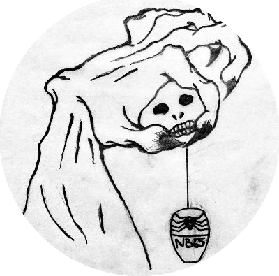

🇷🇺 Russian Invades 🇺🇦 Ukraine
Russia's "three day special military operation" began, a major escalation in the ongoing war which started in 2014.
 Anonymous Declares Cyber War against Russia and Launches DDOS Attacks
Anonymous Declares Cyber War against Russia and Launches DDOS Attacks
On the 24th February the Anonymous Collective officially declared Cyber War against Russia in an operation called #OpRussia. Large scale DDOS attacks were launched on Russian government websites including: kremlin.ru, government.ru, and mil.ru, as well as Russian propaganda station RT.com. It is worth noting that these early DDOS attacks were likely also conducted by many other groups other than Anonymous. Attacks on Russian government websites continued for the first weeks of the war.
 The Belarusian Cyber-Partisans Hack and Disrupt Belarusian Train Systems
The Belarusian Cyber-Partisans Hack and Disrupt Belarusian Train Systems
The group disrupted train networks around Belarus to make logistics of Russian troops based there more difficult. These attacks were ongoing before the war started too. The railway system was forced to switch into manual mode as a result of the attacks.
IT Army of Ukraine is formed
The IT Army is started, Mykhailo Fedorov, the Ukrainian Minister of Digital Transformation and First Vice Prime Minister of Ukraine, announced the creation of the IT Army of Ukraine. It's aim is to disrupt critical Russian infrastructure and protect Ukraine's own infrastructure.
Anonymous Liberland & the Pwn-Bär Hack Team Tetraedr leak
Around 200GB of emails from Tetraedr, a Belarusian weapons manufacturer, were leaked.
 NB65 Breach Moscow's Nuclear Safety Institute
Network Battalion 65 leaked documents from Moscow's Nuclear Safety Institute.
NB65 Hack Russian Gas Compressors
Russian gas compressors from the company Fornovogas were hacked by NB65, who leaked gas, turned off fans, and deleted configurations and profiles.
Anonymous Deface Russian Propaganda Websites
Russian propaganda websites were defaced and displayed a message against the invasion of Ukraine. Affected outlets included; Tass, Kommersant, Izvestia, Fontanka, Forbes, and RBK.
 B00da, Porteur & Wh1t3 Sh4d0w leaked Data from Metprom Group
B00da, Porteur & Wh1t3 Sh4d0w leaked Data from Metprom Group